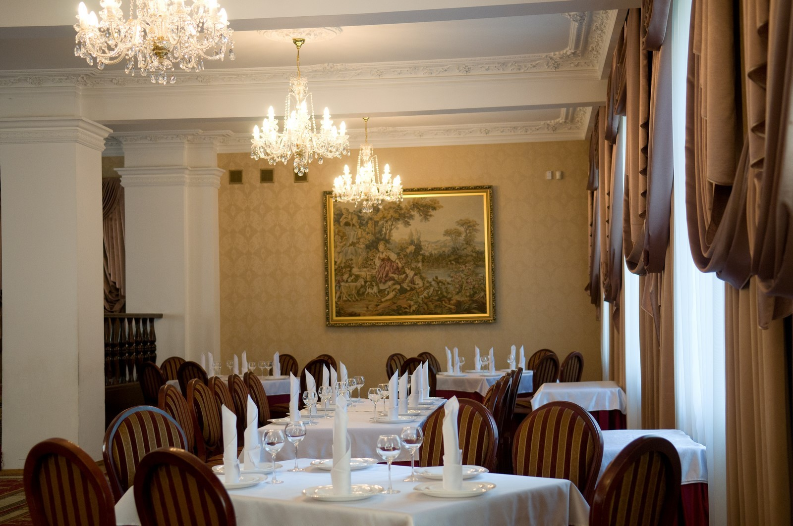
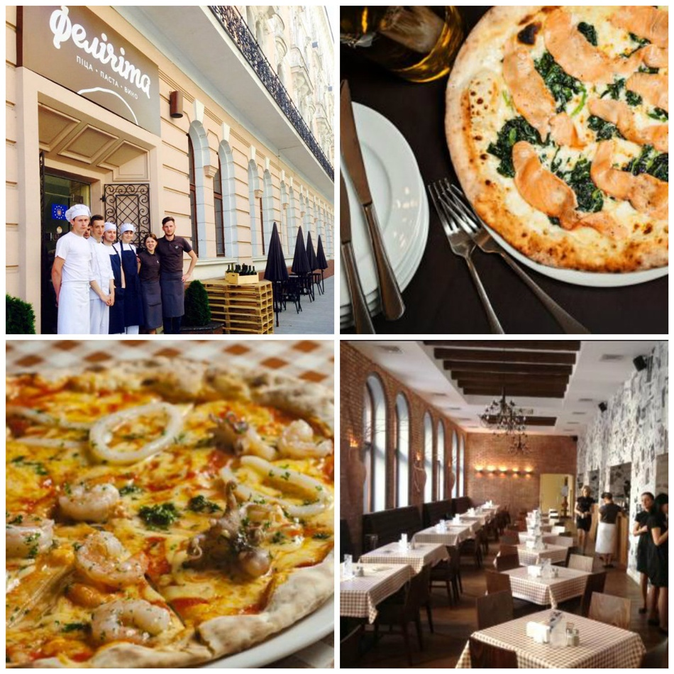

Ресторан "TERRAZZA" один із найпопулярніших ресторанів в історичному Львові. З сьомого поверху, на якому розташований ресторан, відвідувачі зможуть побачити не тільки архітектурні пам'ятники, але й відчути дух старовинного « міста- музею». Ресторан ідеально підійде, як для романтичної вечері закоханих, так і для зустрічі старих друзів.
Ресторан «Еліта» у Львові — пропонує для Вас класичний вишуканий стиль незабутніх вражень від смачних страв, приємної атмосфери та чудового відпочинку. В ресторані можна побачити — вишукане інтер’єрне оформлення, високий рівень обслуговування, жива інструментальна музика та смачна кухня.
4-зірковий Дністер Прем’єр Готель розташований у серці старовинного Львова, поруч із парком імені І.Франка. З вікон готелю відкривається чудова панорама міста. У готелі працює ресторан та два бари. Дністер належить до мережі Прем’єр Готелів, що гарантує гостям комфорт та високий рівень сервісу.

Піцерія розташована в центрі міста, в готелі "Жорж". Заклад доволі світлий та просторий, інтер'єр доволі стриманий, але дуже охайний. Піцу тут печуть на живому вогні у дров’яній печі. Окрім піци в меню є пасти, салати, десерти. З напоїв – соки, вина, чай та кава. Доставки піци немає, але можна забрати замовлення з собою.
